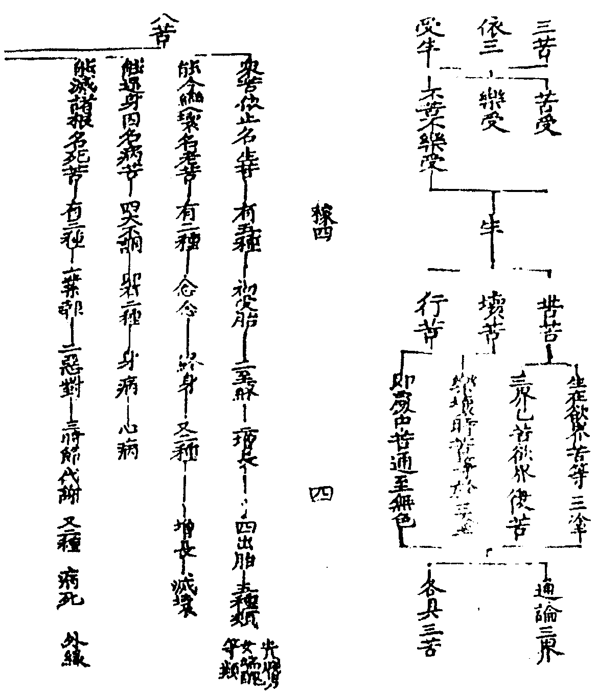
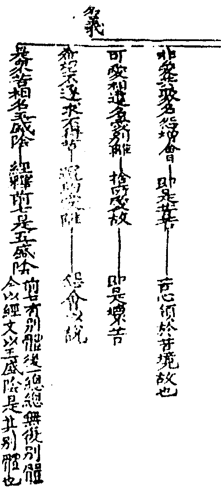
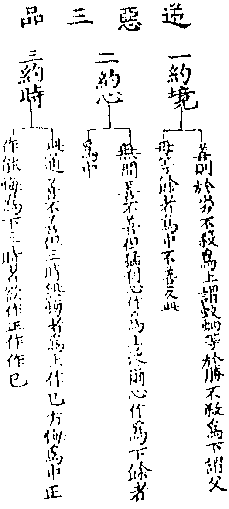
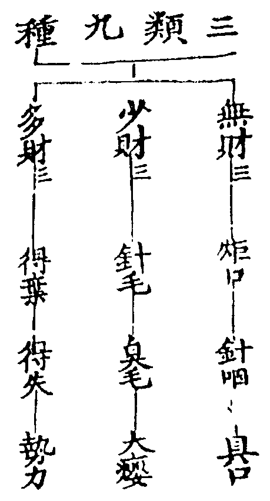
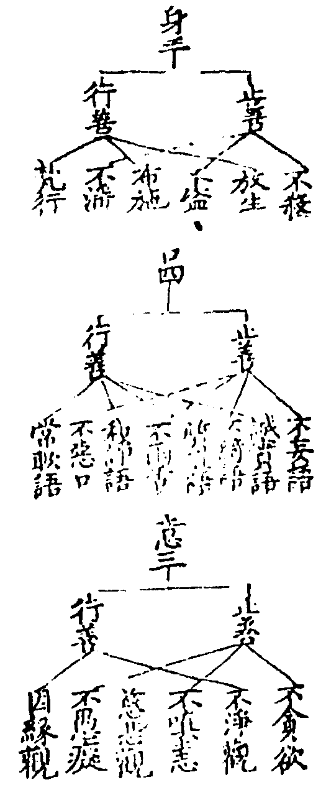
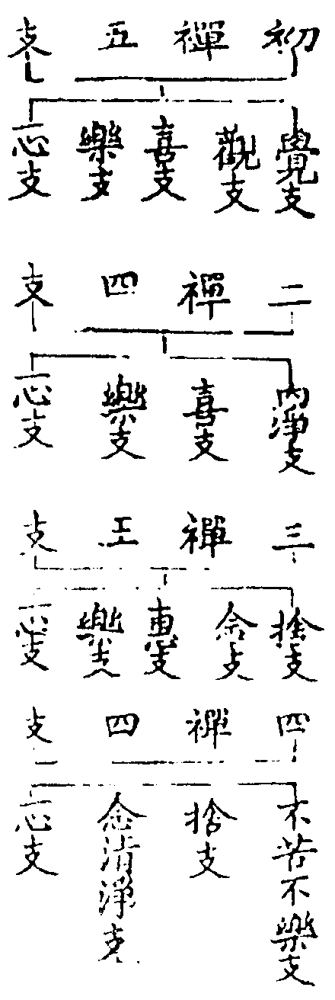

天台四教儀集註卷第四 稼四
此之三藏名通大小今取小乘三藏也大智度論云迦旃延子自以聰明利根於婆沙中明三藏義不讀衍經非大菩薩又法華云貪著小乘三藏學者依此等文故大師稱小乘為三藏教。
通論小衍俱有三藏今則別指小乘不可以通難別故下即引經論以證別意大智度論釋大品經龍樹造羅什譯九倍畧之百卷成文亦名釋論智論大論迦旃延子此云文飾善讚詠故大論云佛滅後百年有迦旃延婆羅門(文)非佛世之迦旃延也聰明利根大論云迦旃延子輩是生死人不讀不誦摩訶衍經非大菩薩不知諸法實相自以利根慧智於佛法中作諸論議(文)則知天台以小乘為三藏本乎經論背靜法苑師毀之於前清涼觀師讚之於後苑師謂法華云貪著小乘三藏學者乃以小乘為能別之言明知三藏不唯屬小天台此名濫涉大乘特違至教(指法華為至教)清涼華嚴疏云此師立義理致圓備但三藏名義似小濫以後三教亦有三故所以爾者良以智論之中多名小乘為三藏教成實論中亦自說云我今欲說三藏中實義故有據初對舊醫戒定慧故立此三事條然不同異後二教通教意融三故別教依一法性而顯三故圓教三一無礙故所以不名小乘教者此教亦有大乘六度菩薩三十四心斷結成真佛故(文)釋籤十(七)云三藏通大小何故但屬小今明如法華云貪著小乘三藏學者又大論中處處以三藏對衍而辯大小故凖此文以三藏為小若通論者小衍二門俱有三藏但是通途非別意也若唯通途如何消通法華大論具如四教本中廣明(文)然論別意有三一小乘三藏部別故二小乘三藏隔異故三小乘三藏破舊醫故苑師謂法華以小乘為能別之言且法華大論皆羅什譯論中既以小乘名三藏教故至譯經二言雙舉為成偈文即別義也又大論云佛在世時無三藏名法華何云三藏學者湏知三藏之名起於結集法藏者故大論云摩訶迦葉將諸比丘在耆闍崛山中集三藏文殊尸利彌勒諸大菩薩亦將阿難集摩訶衍三藏是聲聞法摩訶衍是大乘法復次佛在世時無三藏名但有持修多羅比丘持毘尼比丘持摩多羅比丘(文)是則結集經家既立三藏之名故譯經者作此譯耳故法華云三藏學者。
此有三乘根性。
此是總標三乘聲聞四諦教苦為初門支佛因緣教集為初門菩薩六度教道為初門又三人亦通諦緣度三文句七(廿一)四念處一(二)云所言三者其義有八謂教理智斷行位因果理三者聲聞理在正使外緣覺理在習氣外菩薩理在正習外教三者聲聞稟四諦教緣覺稟十二因緣菩薩稟六度智三者聲聞總相智緣覺別相智菩薩總別相智斷三者聲聞斷正緣覺斷習菩薩斷正習行三者聲聞為自修戒定慧緣覺為自修樂獨善寂菩薩為眾生修六度位三者聲聞住學無學緣覺住無學菩薩三僧祗登道塲因三者聲聞帶果行因緣覺望果行因菩薩伏惑行因果三者聲聞斷正如燒木為炭緣覺斷習如燒木為灰菩薩正習[書-曰+皿]如燒木無炭灰也(文)。
初聲聞人依生滅四諦教。
聞佛聲教故曰聲聞生滅四諦止觀一(十一)云苦則三相遷移(生異滅)集則四心流動(貪嗔癡等分)道則對治易奪滅則滅有還無雖世出世四皆變異故名生滅(文)自性不虛四皆諗實故名為諦也。
言四諦者一苦諦。
大經云凡夫有苦而無諦聲聞有苦而有諦凡夫不見苦理故言無諦聲聞能見無常苦空故言有諦法界次第中(十)云苦以逼惱為義一切有為心行常為無常患累之所逼惱故名為苦謂三苦八苦等。


二十五有依正二報是言二十五有者四洲四惡趣六欲并梵天四禪四空處無想五那含(四洲四趣成八六欲天并梵王天成十五四禪四空處成二十三無想天及那含天成二十五)別則二十五有總則六道生死。
輔行一下(廿一)云因果不忘故名為有(文)畧云三有欲色無色或云九有三界分九地故國土名依報五陰假名是正報即苦諦之體四洲水中可居曰洲四惡趣三途加修羅以修羅一日一夜三時受苦故六欲希須名欲六天各有三種欲一飲食欲二睡眠欲三[婬-壬+(工/山)]欲梵王無想及五那含總在四禪經教別為三有者為破外道計梵王為生萬物之主計無想無心為涅槃計五那含為真解脫故六道輪轉相通故名為道輔行二上(廿五)引大論三十三問云云何六道復云五道荅佛去世後五百年中部別不同各回佛經以從己義故使修羅一道有無不同(文)楞嚴中更開神仙一類為七趣又六道不出胎卵濕化四生俱舍頌云人旁生具四地獄及諸天中有唯化生鬼通胎化二(文)。
一地獄道梵語捺落迦又語泥黎此翻苦具而言地獄者此處在地之下故言地獄謂八寒八熱等大獄各有眷屬其類無數其中受苦者隨其作業各有輕重經刦數等其最重處一日之中八萬四千生死經刦無量作上品五逆十惡者感此道身。
地獄從處為名婆沙云贍部洲下過五百踰繕那乃有地獄梵語釋籤八(二十)云元梵天種還作梵語及以梵書(文)輔行七(十八)云光音初下展轉出生是故五天並名梵種(文)翻彼梵語成此華言故云翻也周禮有象胥氏通四方之語東方曰寄南方曰象西方曰狄鞮(音低低之言知也)北方曰譯今翻西語諸經皆云譯者從通稱也如周禮四官通稱象胥氏苦具造惡之者受苦具度亦云苦器八寒八熱偈云頞部陁尼剌部陀寒逼身皰及皰裂頞哳吒并嚯嚯婆唬唬婆三皆痛聲六嗢(烏沒反)鉢羅鉢特摩第八摩訶鉢特摩青蓮紅蓮大紅蓮如次對三種身色(已上八寒)等活(斬刺磨擣吹活等前)黑繩(黑繩綢量後方斬鋸)三眾合(苦具眾至合黨相殘)嘷呌(眾苦所逼悲嘷發聲)大呌(極苦所逼大呌稱怨)六炎熱(火隨身轉熱苦難堪)七極熱(若內若外自身他身俱出猛火互相燒害)下八阿鼻(或云阿鼻旨亦云阿毘成論明趣果受苦時命及形五皆無間也)此八寒熱根本獄各有眷屬其類無數等活等八獄各有四門四門各有四獄謂煻煨屍糞鋒刃烈河增一獄十六總有百二十八皆名遊增有情遊彼其苦增故凖妙玄第六云八寒亦具百二十八而正理論等但云眷屬故俱舍圖熱竪寒橫於八寒邊不列遊增更有孤獨鬲子輕繫等獄遍在江海山林空中等處婆娑七云南洲有正有邊東西二洲唯邊無正北洲邊正俱無三洲人若造重罪皆來南洲正獄及東西南洲邊獄受苦妙玄六(廿八)云此正地獄在地下二萬由旬其傍地獄或在地上或在銕圍山間輕重傍輕正重重者遍歷百三十六獄中者不遍下者復减經刦數等俱舍云等活等上六如次以欲天壽為一晝夜(人間五十嵗為四天王一晝夜四天王五百嵗為等活一晝夜當人間九百萬嵗又人間百嵗為忉利天一晝夜忉利天一千嵗為黑繩一晝夜當人間三千六百萬嵗)壽量亦同彼(等活壽同四天王五百嵗黑繩壽同忉利天一千嵗等活等苦壽如此可不畏耶)極熱半中刦無間中刦全旁生極一中(難陀龍等壽一住刦)鬼日月五百(鬼以人間一月為一日積日為月壽五百年)頞部陁壽量如一婆訶麻(婆訶翻篅紵二十斛胡麻今俗所用盛米者是)百年除一[書-曰+皿](假使有人百年除一粒麻二十斛[書-曰+皿]名為頞部陀壽)後後倍二十(第二皰裂二十婆訶麻後之六獄倍增可知)八萬四千生死毘婆娑云五道各有自爾之力地獄色斷還續妙樂五(三十)引毘曇云一切地獄初生之時皆有三念知此處是地獄由某因所生從某處來文句四(二十四)云初皆眾生若受苦時痛聲不復可分別妙樂五(三十)云初入地獄如本有語後時但作波波等聲不復可辯文句云獄卒是變化令見非眾生數初將罪人縛至閻王所者是眾生數若受苦時非眾生數妙樂五(三十)云有情非情並是共業所感而為心變(文)眾生常為熱苦所逼小獄通寒熱大獄惟在熱四解脫經稱為火途且從熱為名也五逆殺父殺母殺阿羅漢出佛身血破和合僧十惡身業三種謂殺盜淫口業有四妄言綺語兩舌惡口意業有三貪嗔癡上品善不善業皆有三品而復有三如摭華鈔。

二畜生道亦云旁生此道遍在諸處披毛戴角鱗甲羽毛四足多足有足無足水陸空行互相吞啖受苦無窮愚癡貪欲作中品五逆十惡者感此道身。
梵語底栗車輔行二上(廿五)云畜生者褚六許六向究三反並通作褚六音即六畜也謂牛馬雞豚犬羊則攝趣不[書-曰+皿]今通論此道不局六也旁生婆娑云形旁行旁此道徧在諸處婆娑云遍五道中有之故也文句四(三十四)云四天三十三天悉有而上天所乘象馬等是福業化作非眾生數也披毛如走獸等戴角如牛羊等鱗甲如魚鱉等羽毛如飛禽等水陸空行此三是畜生所依處也妙玄云陸有三品重者土內不見光明中者山林輕者人所畜養大論以三類攝畜生[書-曰+皿]謂晝行夜行晝夜行互相吞啖文句四(三十四)云畜生者多育冥盲冥者無明也強者伏弱飲血啖肉怖畏百端四解脫經稱為血途從相啖邊為名也中品其心劣前作已少悔俱舍頌云旁生極一中(旁生壽量多無定限其極長者亦一中刦謂難陀龍等諸大龍王皆住一刦能持大地)文句四(三十五)云刦初時皆解聖語後飲食異謟心而語皆變或不能語妙樂五(三十)云諸教相中畜生能言皆此時也又畜生能飛空自爾力也。
三餓鬼道梵語闍黎哆此道亦徧諸趣有福德者作山林塚廟神無福德者居不淨處不得飲食常受鞭打填河塞海受苦無量謟誑心意作下品五逆十惡感此道身。
輔行二上(廿五)云梵語闍黎哆此翻祖父後生云祖父者從初受名又後生亦是後生之祖父也爾雅云鬼者歸也尸子曰古者名死人為歸人又云人神曰鬼地神曰祗天神曰靈又云饑餓謂餓鬼也恒被驅使此道亦遍諸趣輔行三下云此處在閻浮提下五百由旬有閰王界縱廣量亦等是根本處亦有住閻浮提洲者有德者住花果樹林無德者居不淨處東西二洲亦有鬼北洲唯有威德者諸天亦有隨生處形或居海渚或在人間山林中或似人形或似獸形不得飲食重者饑火節燄不聞漿水之名中者伺求蕩滌膿血糞穢輕者時薄一飽加以刀杖驅逼塞海填河四解脫經稱為刀途從被刀杖驅逼為名也下品正作能悔故云下品俱舍頌云鬼日月五百以人間一月為一日壽五百嵗更有三類九種內障外障無障如蘭盆疏今水陸施食正為燄口鬼神婆羅門仙出生所供為曠野鬼神鬼子母等。

四阿修羅道此翻無酒又無端正又無天或在海岸海底宮殿嚴飾常好闘戰怕怖無極在因之時懷猜忌心雖行五常欲勝他故作下品十善感此道身。
文句(二廿一)云四天下採花醞於大海魚龍業力其味不變嗔妬誓斷故言無酒無端正男醜女端舍脂是也無天淨名疏二(十四)云此神果報最勝隣次諸天而非天也妙樂二(廿九)云無天德故(文)或在海岸海底輔行二上(廿五)云世界初成住須彌頂亦有宮殿後光音天下如是展轉至第五天修羅嗔便避之無住處下生此(文)文句二(廿一)云鬼道攝者居大海邊畜生道攝者居大海底凖此則知妙玄明或居半須彌山碞窟應天種攝妙樂引阿含四修羅次第住於海底各於海下二萬由旬以為一宮居止處殊勝必兼多福方得生彼又楞嚴經明胎卵濕化四種之異屬於鬼畜人天四趣所攝(具如彼文)宮殿嚴飾妙樂長阿含十八云南洲金剛山中有修羅宮所治六十由旬欄楯行樹等然一日一夜三時受苦苦具自來入其宮中屬四趣者良有以也(文)常好闘戰文句二(廿二)云毘摩質多生舍脂帝釋納為妻後讒其父遂交兵脚波海水手攻善見帝釋以般若呪力不能為害(文)怕怖無極淨名疏二(十四)云徃昔嫉妬惱他故常多怖畏(文)猜忌輔行二上(廿五)云又嫉佛說法佛為諸天說四念處則說五念處佛說三十七品則說三十八品常為曲心所覆猜者疑懼也詩傳云以色為妬以行為忌害賢曰嫉故知修羅嫉賢忌行五常輔行一下三云以慈育物為仁以德推遷為義進退合冝為禮權奇超拔為智言可反覆為信內德俱備方成人道慢強無德判屬修羅又據善心仍居下品外揚五德本在輕他(文)十善對十惡立謂不殺等又十皆有止行二善如不殺止善放生是行善等。

五人道四洲不同謂東弗婆提(壽二百五十嵗)南閻浮提(壽一百嵗)西瞿耶尼(壽五百嵗)北欝單越(壽一千嵗命無中天聖人不出其中即八難之一)皆苦樂相間在因之時行五常五戒五常者仁義禮智信五戒者不殺不盜不邪淫不妄語不飲酒行中品十善感此道身。
輔行二上(廿六)云梵語摩[少/兔]賖此云意人中所作皆先意思易曰唯人為萬物之靈禮云人者天地之心五行之端此亦未知五道故也婆沙云五道多慢莫過於人又云五道中能息意者亦莫過人(文)法苑云人者忍也於世違順人能安忍四洲此世界下有三輪下風次水上金輪金輪之上有九山八海須彌居中鐵圍在外中繞須彌有七金山七香水海第七山外鐵圍之內即第八醎海東西南北有四大洲四洲土輪居金輪之上於四洲邊復有二小洲具如俱舍弗婆提翻勝身閻浮提亦云贍部無熱池側有贍部林樹形高大其果甘羙依樹立名此方無故不翻西域記中翻為穢樹瞿耶尼翻牛貨俱舍鈔云刦初時高樹下有一寶牛為貨易故欝單越亦云俱盧翻勝處勝三洲故俱舍頌云贍部洲人量三肘半四肘(尺八)東西北洲人倍倍增如次(東洲八肘西洲十六肘北洲三十二肘)唯有北洲人壽定一千嵗餘三且據極分為言未必全爾聖人不出其中不生於彼而闡化非不居彼凖寶雲經頗羅墮將弟子六百人住欝單越八難三途以為三人中則有四一肓聾瘖瘂二世智辯聦三佛前佛後四北俱盧洲天上一無想或指長壽天受此諸果報不得於聖化苦樂相間輔行(四九上)云若論果報南洲為下下若得值佛南洲為上上故大論六(十二)云閻浮提以三事故尚勝諸天北洲不及一能斷[婬-壬+(工/山)]欲二識念力三能精進勇猛復有書般若是故諸天下來[聽-王]法故大經云下下因緣故生北洲乃至上上因緣故生南洲(文)妙玄六(廿九)云四天下人雖果報勝劣俱有生老病死同是輕報泥犂(文)五常五戒常者不易戒乃防非仁則不殺義則不盜禮則不淫信則不妄語智則不飲酒酒能昏性起過故也又五戒四性一遮酒乃遮制餘性是惡大小乘禁戒此為根本止觀四(二)云性戒者莫問受與不受犯即是罪受與不受持即是善若受戒持生福犯獲罪不受無福不受犯無罪(文)輔行四上(三)云所言性者即舊戒也不待佛制性是善惡故名為性又云五戒者四性一遮故俱舍云遮中唯離酒為護餘律儀若論制已性上更加一箇制罪(文)性戒輪王亦用遮戒如來所制五戒十善開合之異身三可見不妄語則攝口業四種酒防意地則攝意三。
六天道二十八天不同(欲界六天色界十八天無色界四天)。
輔行二上(卄六)云今釋典中所言天者亦名最勝亦名光明(文)文句四(未)云天者天然自然樂勝身勝(文)二十八天不同舉竪包橫也若統論一佛化境則有三千大千世界(三千者小千中千大千也二禪統一小千三禪統一中千四禪統一大千三千是總大千是別總別雙舉以別顯總也)俱舍頌云四大洲日月蘇迷盧欲天梵世各一千名一小千界(謂一千四洲一千日月一千須彌一千六欲天一千初禪天總名小千世界)此小千千倍說名一中千(一千箇小千世界名中千世界)此千倍大千(一千箇中千世界名大千世界小千為一二禪所覆中千為一三禪所覆大千為一四禪所覆例此應云千箇初禪為小千千箇二禪為中千千箇三禪為大千小千如十錢中千如十貫大千如千箇千貫然以十萬為億則大千有萬億日月而光明經云百億日月乃至百億非非想天等者盖億有四種一十萬為億中千有十億大千萬億二百萬為億中千有一億大千有千億三千萬為億大千則有百億光明據此數也四萬萬為億大千世界但有十億又復四禪非想唯一亦言百億者光明記五七云以下望上言之耳又恐翻譯之訛也以義淨重翻則無百億非想之言又瑞應經云三千日月萬一千天地之中央者萬即大千謂萬億二千即中千小千也盖言佛生迦維衛國是三千世界之中夫也)皆同一成壞(須知成住壞空各二十刦為一大刦一增一减為一小劫於住劫中二十增减每一增减有小三災壞於有情住刦[書-曰+皿]時乃有大三災壞於世界經二十刦空刦成刦各二十刦並約住刦數量而論)業道增壽减至十三災現刀疾飢如次七日月年止(據瑜伽論人壽减至三十嵗饑饉災起七年七月七日止减至二十嵗時疾疫災起七月七日止减至十嵗時刀兵災起七日七夜止今俱舍云至十三災現者乃據减刦之極為言也故自十嵗逐次逆對則十嵗刀兵乃對七日二十嵗時疾疫乃對七月三十嵗時饑饉乃對七年則與瑜伽初無異也垂裕記十（十二）引什師云婆須蜜從忉利天下生王家作太子化眾人言我等祖父壽命極長以今嗔恚無慈故至此短壽是故汝等當行慈心眾人從命惡心漸薄此後主子壽二十嵗如是展轉增至八萬四千嵗也文論增則子年倍父年則自十嵗增至八萬四千論减則百年减一年則自八萬四千嵗减至十嵗故一增一减為一小劫)三災水火風上三定為頂(二禪為火災頂三禪為水災頂四禪為風災頂)如次內災等四無不動故(初禪內有覺觀能燒惱心等外火災二禪內有喜受與輕安俱潤身如水故徧身觕重等外水災三禪內有動息息亦是風等外風災四禪無內患故亦無外災)然彼器非常情俱生滅故(彼器即依報雖云不動非是常住不壞之法情即有情正報彼天宮殿情生則生情滅則滅)要七火一水七水火後風(初禪已下七經火災是則七番成住壞空當七大劫第八水災齊於二禪又一番成壞當八大劫如是初禪已下七七四十九火二禪已下七番水災成五十六劫初禪已下又七火災當六十三劫第六十四劫風災壞至三禪也又火災興由七日並現劫未壞時六日隱在雙持山下世界壞時後六日漸出水災起時由雨霖注風災生時由風相擊從下風輪有猛風起又業力盡隨處生風)。
初欲界六天者一四天王天(居須彌山腹)二忉利天(居須彌山頂自有三十三天已上二天單修上品十善得生其中)三夜摩天四兜率天五化樂天六他化自在天(已上四天空居修上品十善兼修未到定得生其中)。
俱舍頌云六受欲交抱執手笑視[婬-壬+(工/山)]初如五至十色圓滿有衣(輔行六上二云地居形交忉利以風為事夜魔抱持兜率執手化樂視笑他化但視文六欲天化生時四天王天如五嵗兒乃至他化如十嵗兒後則漸長如其身量色界初生身量即成旦具天衣如梵眾天初生長半由旬)四天王天東方提頭頼吒天王此云持國護持國土故居黃金埵領乾闥婆富單那南方毘留勒叉天王此云增長令他善根增長故居琉璃埵領鳩槃茶薜荔多王有九十一子(如靈感傳)西方毘留博义天王此云廣目亦云非好報亦云雜語能作種種語故居白銀埵領毘舍闍毒龍等北方毘沙門天王此云多聞福德之名聞四方故居水晶埵領夜叉羅剎諸處建立天王掌事見唐天寶元年如僧史畧俱舍頌云妙高層有四相去各十千(梵語蘇迷盧亦云須彌此云妙高妙謂四實所成高謂出眾山表始從水際至山半腹分為四級相云各十千由旬)旁出十六千八四二千量(此橫廣也旁即是橫最下一層廣十六千踰[跳-兆+善]那第二層八千第三層四千第四層二千也)堅首及持鬘桓憍大王眾如次居四級(堅首第三皆藥叉眾大王即四天王堅首最下級乃至四王居最上級)亦住餘七山(諸藥又眾亦住餘七金山是四王所部眾故)又日月宮城五風所持(一持二養三受四轉五調)齊雙持山頂旋環山腹照四天下雙持山高四萬二千由旬須彌七金及銕圍山入水皆八萬四千由旬須彌出水亦八萬四千由旬餘之八山半半論减乃至銕圍山高三百二十八由旬二俱盧半九山廣闊皆等高量(俱盧舍此云二里)日宮廣五十一由旬月宮廣五十由旬俱舍頌云夜半日沒中日出四洲等(輔行引長阿舍二十二云欝單越夜半弗婆提日沒閻浮提日中瞿耶尼日出經文次第四方遍說彼經又云閻浮提為東弗子逮為西乃至單越為西于逮為東以由日月轉故皆謂日出處為東文)近日自影覆故見月輪缺(如新月則西近於日自影覆東故見東缺殘月則東近於日自影覆西故見西缺)忉利此云三十三山頂四角各有八宮中帝釋殿背世三十三人天帝為主於摩竭陀國修勝業故故同生此俱舍頌云妙高頂八萬(徑過八萬踰[跳-兆+善]那)三十三天居四角有四峯金剛手所住(有藥叉神名金剛手執金剛杵止住其中護諸天故)中宮名善見(見者稱善故)周萬踰[跳-兆+善]那高一半金城(善見外墻以金為之高一由旬半城有千門)雜飾地柔軟中有殊勝殿周千踰[跳-兆+善]那外四苑莊嚴眾車麄雜喜(城外四苑一眾車苑隨天福力種種車現二麄惡苑麄澁戰器天欲戰時刀杖等現三雜林苑雜受欲樂故四喜林苑極妙之境觀者無厭名曰喜林也)妙地居四方相去各二十(苑邊有地去苑各二十由旬)東北圓生樹(城外東北樹名圓生挺葉開花妙香芬馥順風遍滿百踰[跳-兆+善]那逆風猶遍五十踰[跳-兆+善]那)西南善法堂(三十三天時集於彼議論如法不如法事)單修上品十善(揀夜摩已上兼修定故)夜摩此翻善時亦名時分時時唱快樂故兜率此云妙足新云覩史陀此云知足於五欲境知止足故化樂於境變化自娛樂故他化自在欲得境時餘天為化假他所作以成己樂即魔王也淨名云多是不思議解脫菩薩住赤色三昧不取不捨應為魔王(文)未到定未入根本禪也止觀九(四)云住欲界定從是心後泯然一轉虛豁不見欲界定中身首衣服床鋪猶如虛空冏冏安隱身是事障事障未來障去身空未來得發是名未到定相(文)然生上四天自是欲界定力今從欲天極處為言云未到定不必四天皆爾俱舍頌云欲天俱盧舍四分一一增(四分之一即半里也初四天王長半里上五並半里論增)人間五十年下天一晝夜承斯壽五百上五倍倍增(四天王壽五百嵗以人間五十年為一日忉利千嵗以人間百年為一日乃至他化十六千嵗以人間千六百年為一日)法華文句(二十九)云三光天子是帝釋內臣如卿相四王是外臣如武將(文)又帝釋為地居天主魔王為六欲天主雖主欲界帝釋四王欲行佛法魔不得制(如感通傳)。
次色界十八天分為四禪初禪三天(梵眾梵輔大梵)二禪三天(少光無量光光音一)三禪三天(少淨無量淨徧淨)四禪九天(無雲福生廣果已上三天凢夫住處修上品十善坐禪者得生其中無想天外道所居無煩無熱善見善現色究竟已上五天第三果居處上之九天離欲麄散未出色籠故名色界坐得禪定故得禪名)。
妙玄云正報之身是清淨色非如欲界垢染色也十八天此凖上座部立若薩婆多宗唯立十六天以梵輔大梵合為一無別處故無想廣果合為一身壽同故若經部宗(佛滅後四百年初從一切有部復出一部名為經部立義凖經不依律論)立十七天梵輔大梵身量別故上座部中須明十八者以廣果無想身壽雖同因果有異廣果以無尋伺為因果無想以無心為因果四禪梵語禪那此翻為定攝心專注不流散故世出世間此禪為根本各有支林功德如法界次第。

輔行九上九引婆沙中問初三何故五二四何故四荅自古相承云欲界五欲為外亂二禪喜為內亂初禪治外亂之始三禪治內亂之始故各有五二禪外亂息四禪內亂息是故二四但立四支初禪三天梵者淨也無欲染故十八天皆淨無欲此當其首偏得淨名梵眾是民梵輔是臣大梵即王也劫初先生劫盡後滅主領大千然通論有萬億梵王唯此是大千之中王名尸棄得為大千之主降此不得(橫論)又初禪有語言號令能統上冠下故也如法華云娑婆世界主梵天王尸棄大梵若摩醯首羅居色界頂報勝為王無統主義以二禪已上無言語法是故諸禪亦各以報勝為主非統御也(竪辯)具如法華文句淨名疏明若涅槃疏云娑婆世界主正是首羅又云梵王只領小千而已乃古師之說非經家正意二禪三天少光光明少故無量光光明轉增無限量故光音以光當語音故新譯云極光三禪三天少淨意識嗜樂離喜而純樂受故無量淨淨勝於前不可量故徧淨樂受最勝淨周普故四禪九天無雲者下雖空居依雲而住此無雲首特號無雲業疏云第四禪上雲居輕薄如星散住不同下天如雲密合(文)福生者修勝福力方生此天從因彰名廣果者凡夫之果無勝過故無想者一期中間心想不行故無煩雜無熱惱善相見善現相究竟無極此五天三果所居名五不還天若俱舍舊圖次第而上若凖楞嚴第九皆橫在四禪中彼四禪天獨有欽聞不能知見如今世間曠野深山聖地道場皆羅漢所住持故世間觕人所不能見(文)又色究竟中有摩醯首羅此翻大自在天俱舍頌云色天踰[跳-兆+善]那初四增半半(謂梵眾半踰[跳-兆+善]那梵輔一大梵一半少光二也)此上倍倍增(無量光四光音八乃至徧淨六十四)唯無雲减三(下徧淨天既六十四無雲倍應百二十八身壽但有一百二十五者謂從變易受入不變易受難故各减三變易不變易約三災壞不壞說)少光上下天大全半為劫(少光已上大全為劫謂少光二大劫乃至色究竟萬六千大劫少光已下大半為劫以由身量與壽量等大梵身既一由旬半故壽當一劫半故以四十小劫為一大劫則六十小劫成劫半也梵輔壽一劫身一由旬四十小劫也梵眾身半由旬故壽半劫二十小劫也)。
三無色界四天(空處識處無所有處非非想已上四天只有四陰而無色蘊故得名也)。
若厭色籠修四空定生四空天名無色界輔行六上(四)云從第四禪欲入空處必作方便滅三種色一可見可對色(色塵)二不可見可對色(五根四塵)三不可見無對色(法入少分無表色也)此之三色並在色界欲入無色故滅此三(文)無色界色小乘空有二宗各計不同大眾部云但無觕色非無細色妙玄四(六)引毘曇云無色有道共戒戒是無作色以無漏緣通故此戒色隨無漏緣至無色也(文)釋籤四(三十一)云言無漏緣通者通九地也既通九地豈隔無色(文)妙樂六(九)云無色雖無四大造色定果所為皆是墻壁(欲色二界業果所為)三界皆以意識維持若約諸宗無色非全無四大色雅合其宜(文有門計有色合經墻壁譬)此是有宗計有色也妙玄引成論云色是無教法(此是空宗牒有宗計)不至無色(此是空宗難有宗也難云應不至無色耶如讀教記戒體中辯)此是空宗計無色也然小乘計有是不了義說無色者乃名了義大乘反此楞嚴經云是四空天身心滅盡定性現前無業果色孤山釋云謂無業果色者顯有定果色也此與小乘有宗義合若大經云無色界色(是佛境界)非諸聲聞緣覺所知者此是大乘說有色義也空處禪門六(九)云此定最初離三種色心緣虛空既與無色相應故名虛空定也(文)識處禪門六(十一)云捨空緣識以識為處正從所緣處受名故名識處(文)無所有處行者厭於識處無邊於是捨之入無所有處亦名不用處禪門六(十二)修此定時不用一切內外境界外境名空內境名識捨此二境故言不用處(文)非非想止觀六(四)引阿毘曇婆沙云非無想天之無想非三空之有想故言非想非無想也人師云無想是色天異界不應仍此得名就同界釋名前無所有定已除想今復除無想想無想兩捨故言非有想非無想(文)輔行六上(五)人師尚不許引色無想天况總引四禪既是論文取亦無失人師釋義亦未全非今家俱存故無破斥(文)止觀九(八)云此定不緣識處故非想不緣不用處故非非想(文)只有四陰輔行五上(卄四)云蘊之與陰新舊異譯(文)積聚名蘊蓋覆名陰積集有為蓋覆真性然諸文或云四禪八定或云四定者輔行九上初云若色無色二界想對則色界名禪無色界名定若總以上界望於下欲則上二界俱名定地下界為散文。
上來所釋從地獄至非非想天雖然苦樂不同未免生而復死死已還生故名生死此是藏教實有苦諦。
一徃言之三途唯苦諸天純樂人中苦樂相間通而言之天亦有苦妙玄六(卄九)云六欲天者地天別有修羅闘戰之難通有五哀死相苦等地獄色天雖無下界諸苦而為色所籠若命盡時不樂入禪風觸吹身唯除眼識餘皆有苦四空諸天雖無欲色界等苦如瘡(空處)如癰(識處)如病(無所有處)如箭入體(非非想)成就細煩惱(文)及非想有八苦等文句六云三藏教詮生滅故云實有也。
天台四教儀集註卷第四